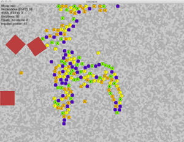

| P | 01010010 | O | 01001010 | E | 01000011 | T | 0101001 |
| 01010000 | R | 01001111 | J | 01000101 | C | 01010100 | S |
 |
Playgene | From gene to music |
| The Incredible Machine | A Rube Goldberg machine | |
| FancyGene | Generate PDF and PNG images of genes/domains and include them in presentations and papers | |
 |
Splicy | Gene Chip splice machine: store and display original data relatives to single probes mapping over Exons. |
 |
NemaFootPrinter | The Comparative Nematodes gene browsers |
| Anonyrails | A CGI-proxy bouncing anonymizer in rails | |
| SimpleNetworkVisualizer | Simple visualizer for graph data (undirected edge lists) | |
 |
Blatanalyzer | Analyzer for the BLAT aligniment software output files |
|  | ProteinFactory | An educational games on mRNA translation made with gosu and chipmunk |
More stuffs at science, other and art pages. You can always go back to links